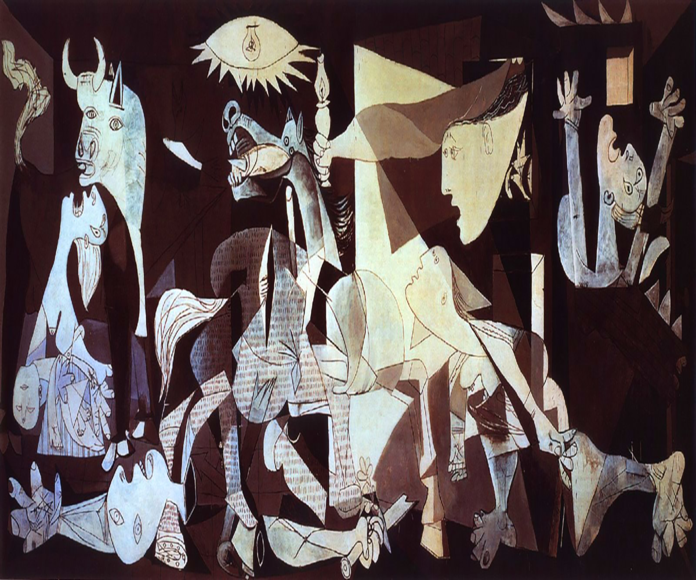
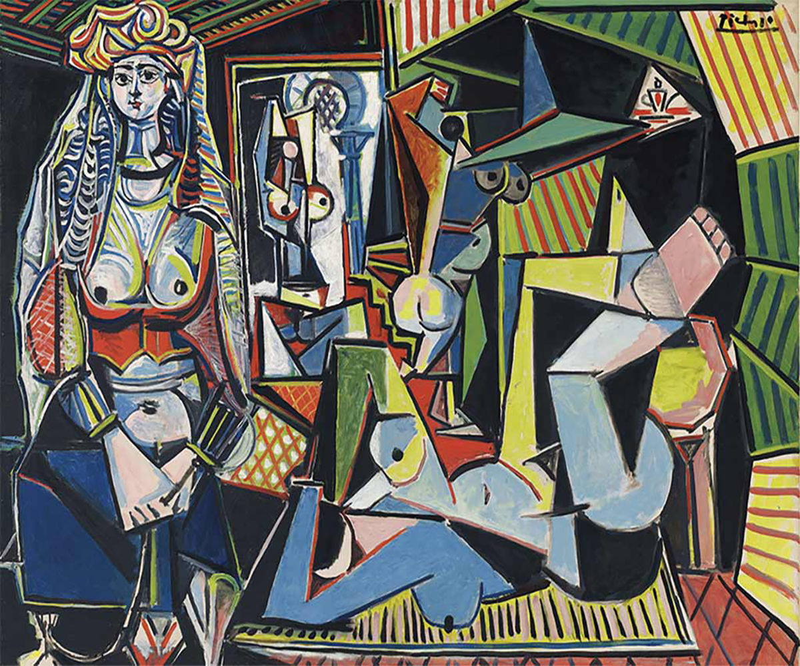
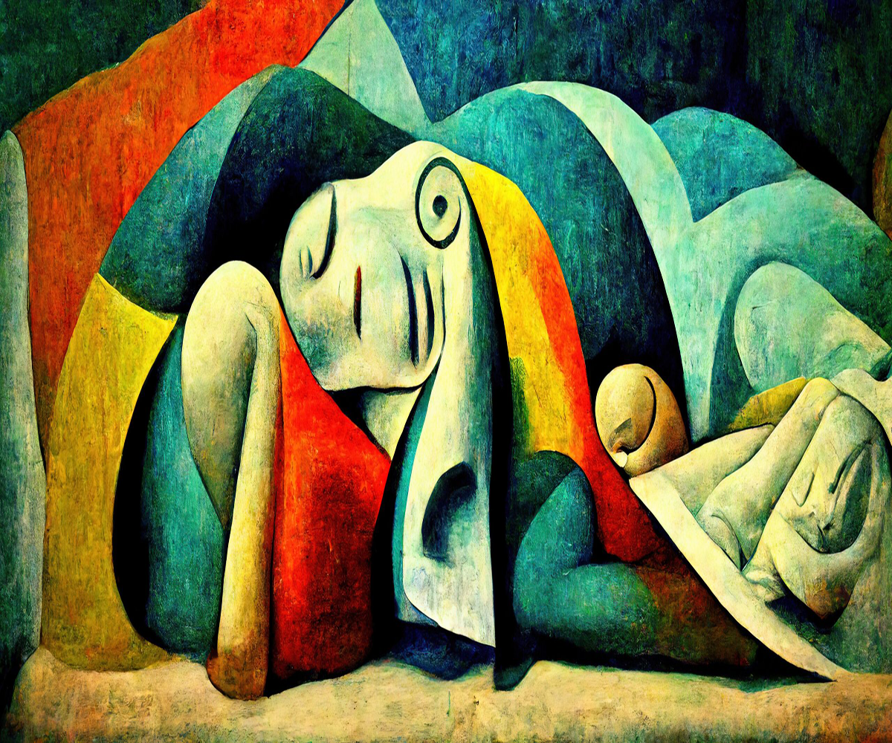
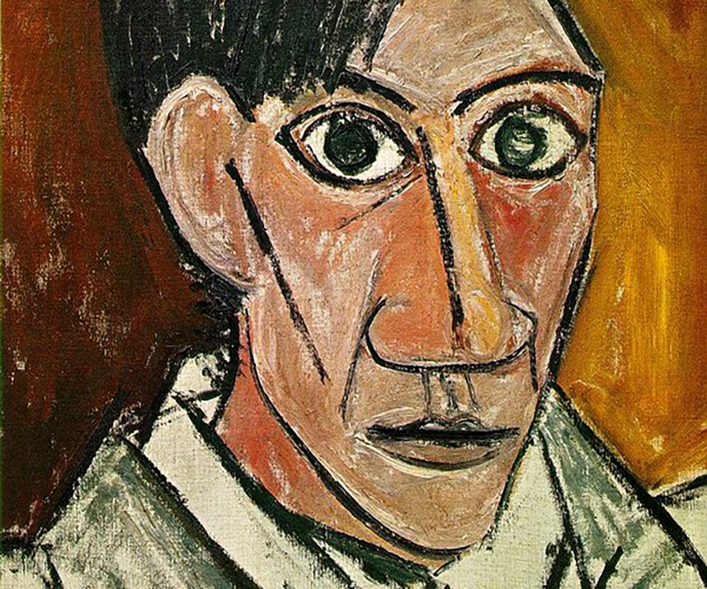
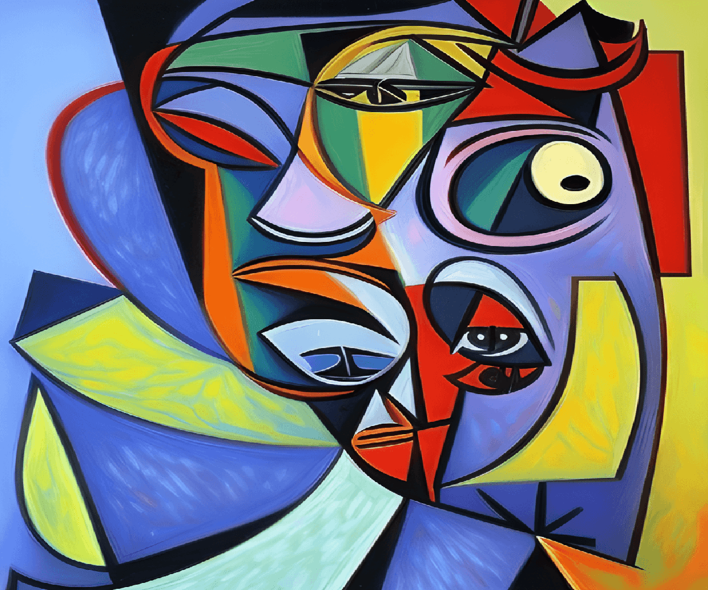
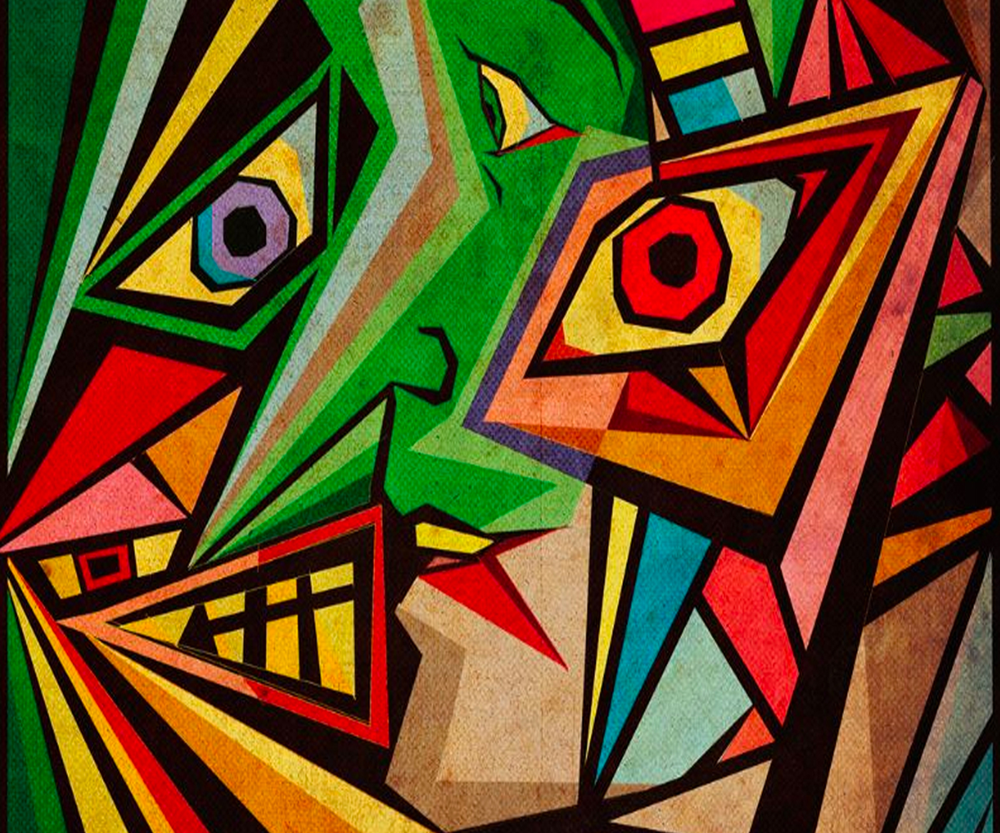

Pablo Picasso
Pablo Picasso, pseudonimo di Pablo Ruiz y Picasso è stato un pittore, scultore e litografo spagnolo, tra i più influenti del XX secolo.Snodo cruciale tra la tradizione ottocentesca e l'arte contemporanea, Picasso è stato un artista innovativo e poliedrico, che ha lasciato un segno indelebile nella storia dell'arte per esser stato il fondatore , insieme a Georges Braque, del Cubismo.





